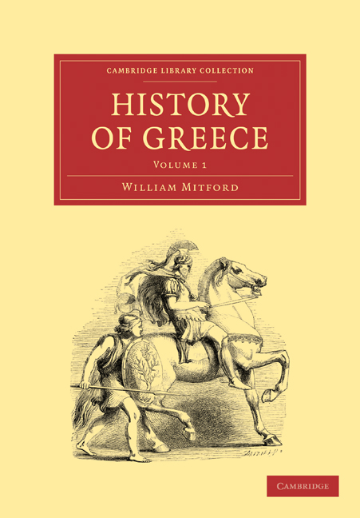
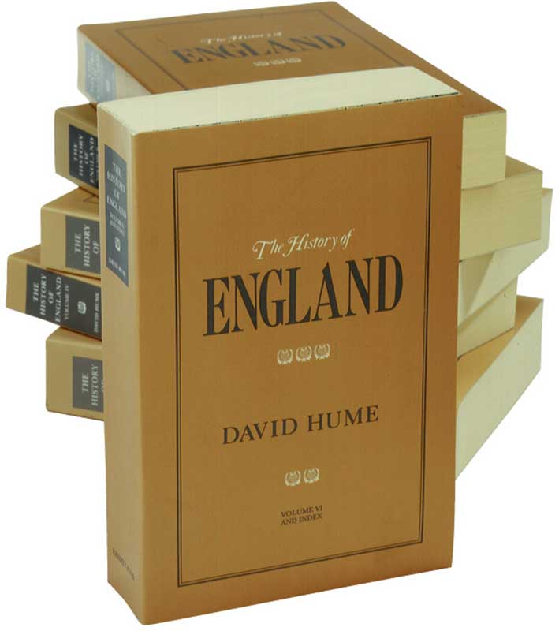
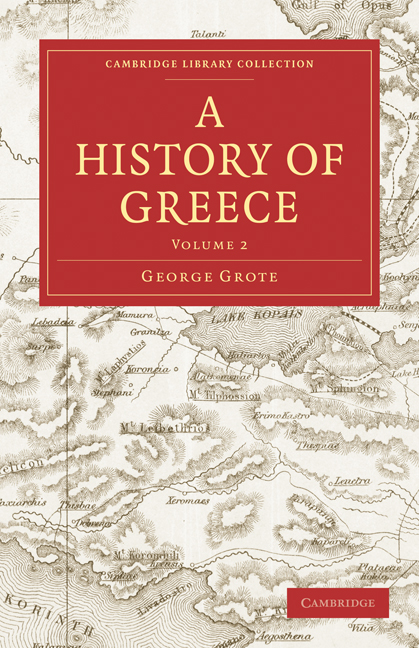
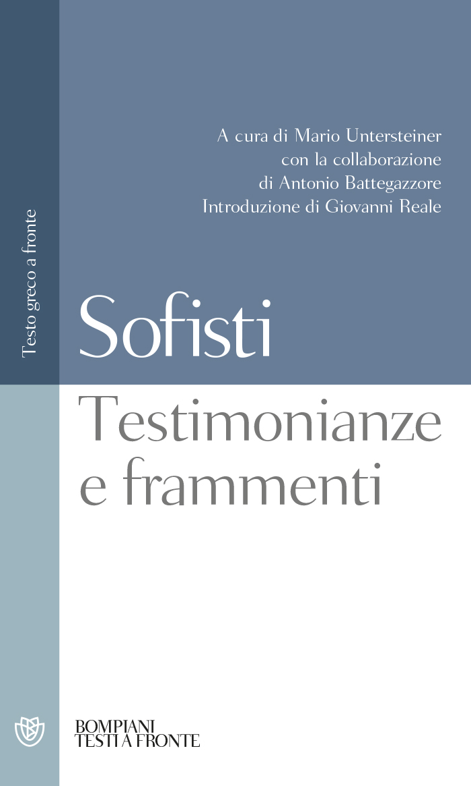

37:00 · 11 OPERE
Cos'ha ancora da dirci la "Storia della Grecia" di William Mitford?
Il filo del discorso
Il relatore presenta la storia della Grecia di William Mitford per discutere che cosa un’opera antica possa ancora dire sul rapporto fra libertà, potere e racconto storico. La biografia introduttiva del fratello Lord Redesdale e il confronto con Hume, Gibbon e Grote permettono di leggere la storiografia inglese nel contesto delle rivoluzioni moderne. La critica di Mitford alla democrazia ateniese è ripresa soprattutto come avvertimento contro l’identificazione del popolo politico con l’intera popolazione e contro l’idea che una costituzione scritta basti a impedire gli abusi. Da qui il contributo passa alle costituzioni tedesca e italiana: il relatore preferirebbe fondare il discorso sulla libertà e polemizza con l’uso contemporaneo della dignità e dell’emergenza. Questi giudizi restano attribuiti e sono distinti dal contenuto effettivo delle norme. Nella seconda parte il problema diventa come leggere gli storici e i filosofi antichi. Tucidide, la rivalutazione ottocentesca dei sofisti e la raccolta curata da Untersteiner introducono una critica della neutralità proclamata e del principio di autorità. Il congedo torna alla responsabilità del lettore: confrontare argomenti e fonti, senza assumere che l’accordo con una tesi ne provi la verità. La valutazione negativa dei sofisti e la preferenza per Mitford sono la posizione del relatore, non il risultato unanime della ricerca storica.
I libri nel discorso

The History of Greece
Copertina del volume I: The History of Greece, Mitford: Cambridge University Press, Cambridge Library Collection, volume I, 31 ottobre 2010, 606 pagine; ristampa dell’edizione uniforme 1808. Opera originariamente pubblicata fra 1784 e 1818.
Copertina ufficiale gialla e rossa Cambridge, volume 1, con cavaliere antico. Non illustra l’intera serie né certifica l’esemplare del video, descritto come postumo, del 1830 e in nove volumi. Il catalogo registra una postuma 1829 in otto volumi e il frontespizio 1838 nomina Redesdale e King: quella precisa combinazione di anno e numero di tomi resta da verificare.
William Mitford e History of Greece espliciti; opera presentata nel titolo e nel contributo.
Passaggio 0:10 ↗ · Fonti e libro ↗
The History of England, from the Invasion of Julius Caesar to the Revolution in 1688
Fotografia della raccolta in sei volumi: The History of England: Liberty Fund, edizione in sei volumi, introduzione di William B. Todd, basata sul testo del 1778. Fotografia editoriale della raccolta completa; non un esemplare del Settecento.
Fotografia autentica dell’editore: sei brossure color ocra con titoli sui dorsi, volume VI e indice in primo piano. Il catalogo online e quello cartaceo riportano dati complessivi non uniformi per data e pagine; non si impone una paginazione unica alla serie né si attribuisce questa edizione al video.
Hume e Storia d’Inghilterra espliciti.
Passaggio 1:50 ↗ · Fonti e libro ↗Storia d’Italia
Copertina: Laterza, Storia d’Italia dal 1861 al 1997, edizione economica 2000, ristampa 2024, 712 pagine; traduzioni di Alberto Aquarone, Giovanna Ferrara degli Uberti e Marco Sampaolo. Prima versione italiana 1959, fino al 1958.
Copertina ufficiale Laterza con collage di manifesti e volto femminile, fascia verde, autore e titolo leggibili. Il sottotitolo cronologico è verificato sul catalogo, non stampato sull’immagine. Il video non identifica la versione 1861–1997: è soltanto l’edizione illustrativa di riferimento.
Mack Smith e Storia d’Italia espliciti; versione cronologica non precisata.
Passaggio 2:06 ↗ · Fonti e libro ↗
A History of Greece
Copertina del volume II: A History of Greece, Grote: Cambridge University Press, Cambridge Library Collection, volume II, 1º aprile 2010, 652 pagine, ristampa del volume del 1846. Opera in dodici volumi pubblicata fra 1846 e 1856.
Copertina ufficiale Cambridge con carta geografica, riquadro rosso, titolo, George Grote e dicitura Volume 2. È il secondo dei dodici volumi, non la copertina di una presunta edizione completa in volume unico.
La storia della Grecia del benthamita Grote è esplicita, nome normalizzato dalla trascrizione automatica.
Passaggio 4:20 ↗ · Fonti e libro ↗
The History of the Decline and Fall of the Roman Empire
Cofanetto dei volumi 1–3: Decline and Fall, Gibbon: Everyman, 16 settembre 1993, cofanetto dei volumi 1–3, 1952 pagine secondo l’editore. Opera originale pubblicata nel 1776–1788.
Fotografia ufficiale del cofanetto Everyman dei primi tre volumi, con immagine di rovine e dorsi bianchi e neri. Non è presentato come l’opera completa né come l’edizione letta dal relatore.
Gibbon e Decline and Fall of the Roman Empire espliciti.
Passaggio 5:27 ↗ · Fonti e libro ↗
Grundgesetz für die Bundesrepublik Deutschland
Copertina dell’edizione Bundestag 2025: Grundgesetz: Deutscher Bundestag, Neuauflage 2025. Testo del 23 maggio 1949 aggiornato al 22 marzo 2025. Copertina integrale dell’opuscolo ufficiale, pagina 1 del PDF.
Copertina grigia con aquila, Deutscher Bundestag, titolo e bollino magenta Neuauflage 2025. Edizione istituzionale di riferimento successiva al video; non una presunta copertina originale 1949.
Grundgesetz e primo articolo sulla dignità, citato anche in tedesco.
Passaggio 18:42 ↗ · Fonti e libro ↗
Costituzione della Repubblica Italiana
Copertina dell’edizione Intra aggiornata al 2023: Intra · 2023 · introduzione di Umberto Vincenti
Copertina autentica del testo integrale, aggiornata alla legge costituzionale 26 settembre 2023 n.1. È successiva al filmato del 2019 e non rappresenta la versione storica letta dal relatore. Umberto Vincenti firma l’introduzione.
Costituzione italiana e articolo 1 sul lavoro espliciti.
Passaggio 20:44 ↗ · Fonti e libro ↗
La guerra del Peloponneso
Identificazione probabile
Copertina: Einaudi-Gallimard · Biblioteca della Pléiade · 1997
Copertina autentica controllata visivamente. Edizione di riferimento, non identificata come quella usata nel video.
Metodo storico di Tucidide e racconto degli eventi: probabile riferimento all’opera storica, titolo non pronunciato.
Passaggio 22:45 ↗ · Fonti e libro ↗
Sofisti. Testimonianze e frammenti
Identificazione probabile
Copertina: Bompiani, Testi a fronte, ottobre 2009, testo greco a fronte; raccolta in volume unico dei quattro fascicoli La Nuova Italia del 1949–1962.
Copertina autentica Bompiani blu e bianca: Sofisti. Testimonianze e frammenti, Untersteiner, Battegazzore e Reale leggibili. L’identificazione dell’opera ricordata è probabile e non dimostra quale edizione fosse sul tavolo né l’assenza assoluta di citazioni di Mitford nel testo.
Raccolta dei sofisti di Untersteiner: probabile Testimonianze e frammenti, titolo completo non pronunciato.
Passaggio 26:12 ↗ · Fonti e libro ↗
Metafisiche del mondo
Copertina: Copertina riprodotta nella recensione di Domenico Conversa
Il relatore richiama il proprio libro: titolo normalizzato in Metafisiche del mondo.
Passaggio 30:54 ↗ · Fonti e libro ↗
La società aperta e i suoi nemici
Identificazione probabile
Copertina: Armando Editore · Classici · 2018 · volume unico
Copertina autentica di riferimento, controllata visivamente. L’edizione non è identificata come quella usata nel video.
Popper e accostamento fra Platone e nemici della società aperta: probabile allusione al titolo dell’opera.
Passaggio 35:34 ↗ · Fonti e libro ↗